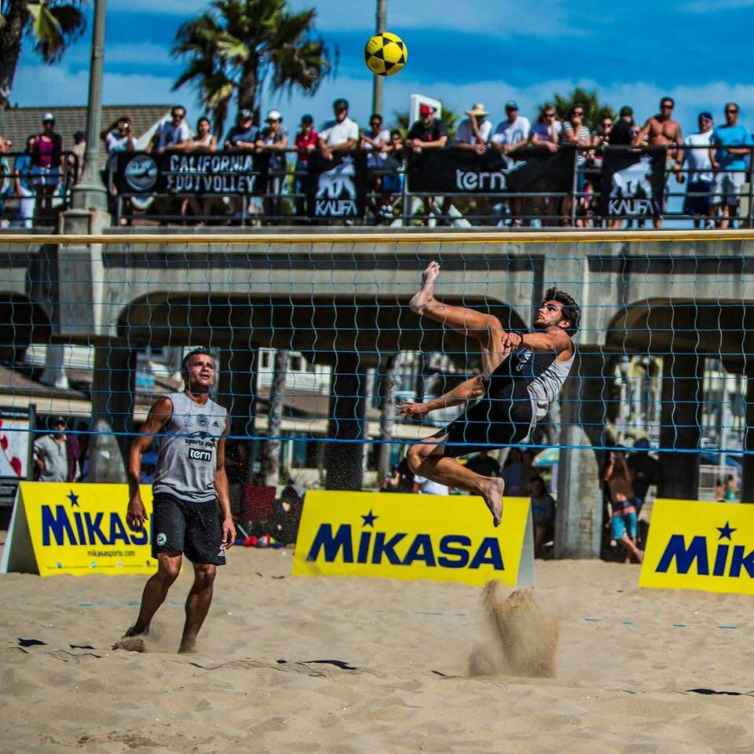

Footvolley is a sport that is the combination aspects of beach volleyball and association football (soccer). Footvolley sport was created in Brazil by Octavio de Moraes in 1965 on the Rio de Janeiro’s Copacabana Beach, and was first known as “pevoley” which literally means foot volley.
Footvolley is a rebound sport played by two teams on a sand court divided by a net. The team has three hits for returning the ball (including the block touch). In Footvolley, the team winning a rally scores a point (Rally Point System). When the receiving team wins a rally, it gains a point and the right to serve. The serving player must be alternated every time this occurs.
hereThe game is played with 2 players on each side and begins when a player serves the ball to their opponent. Service must take place from behind the baseline and the ball has to end up over the net, using only the player's foot.
To master the shark attack you have to be able to kick the ball with your foot from above the hight of the net. This is a cool trick to master and considered very crowd pleasing. Below you can see a perfect shark attack performed by one of the best; Hiltinho
 here